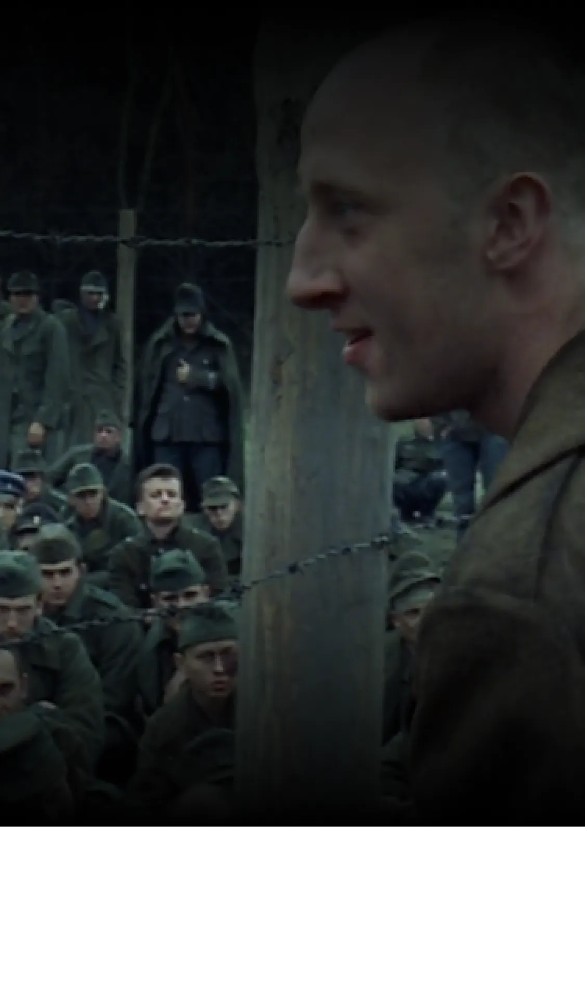
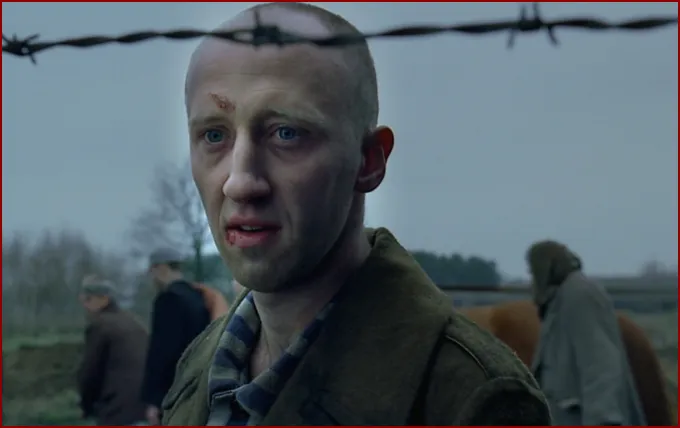

Une phrase simple et profonde qui résume le film : la survie grâce à la musique face à la barbarie nazie. Découvrez cette phrase lourde de valeur et de sens.

La réplique du film : “vous m’avez pris mon violon, vous m’avez pris mon âme”
Parmi les scènes les plus marquantes du film Le Pianiste, il y a celle où à la fin du film, un Polonais s'exclame à tout
un groupe de soldats nazis prisonniers : « Vous m’avez tout pris. Moi, un musicien. Vous avez pris mon violon, vous avez
pris mon âme ». Cette phrase riche de sens et de valeurs présente l’importance de la musique chez l’humain.

"scène du polonais cherchant le pianiste" extrait du film
La musique se posant en vecteur valeur humanisante
Dans une autre scène du film, Szpilman le personnage principal du film, joue du piano dans une maison abandonnée où il
se cache. Il est découvert par un officier allemand, Wilm Hosenfeld, qui lui demande de jouer pour lui. Szpilman
interprète alors Nocturne n°20 en ut dièse mineur de Chopin, une pièce mélancolique et poignante. Hosenfeld, touché par
la musique et par le talent du pianiste, décide de l’aider à survivre en lui apportant de la nourriture et en lui
trouvant un autre abri. Il lui dit : “je ne sais pas comment vous remercier”. Szpilman répond : “merci à vous”.
"scène du polonais ayant pitié face au Pianiste grâce à la musique" extrait du film
Cette scène montre comment la musique peut créer un lien entre deux êtres humains que tout oppose à première vue, mais
qui finalement restent des humains sensibles à certaines choses pouvant faire preuve d’empathie et de générosité. Pour
en savoir plus sur la musique du Film, cliquez ici